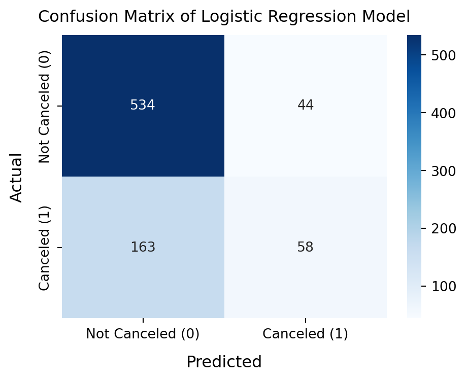
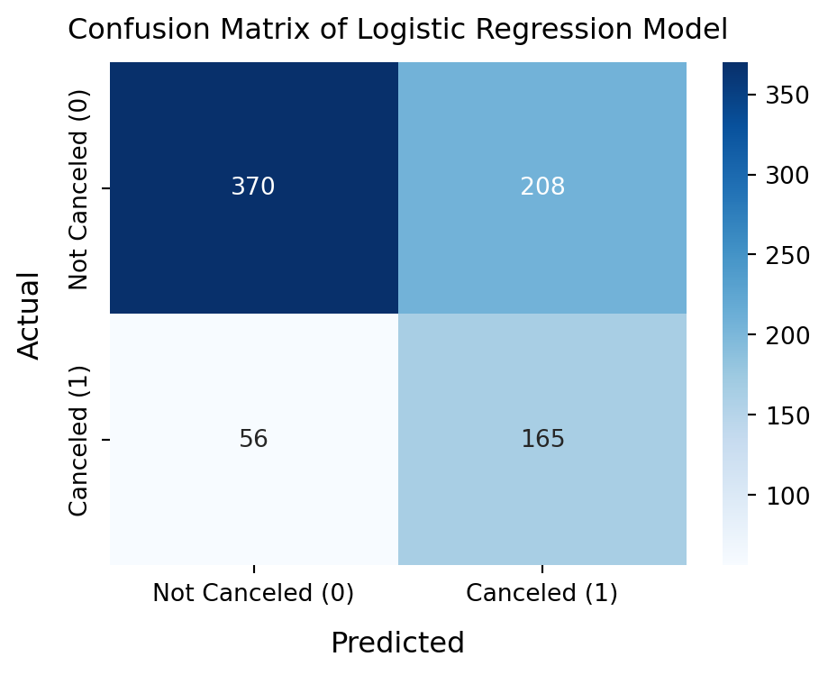
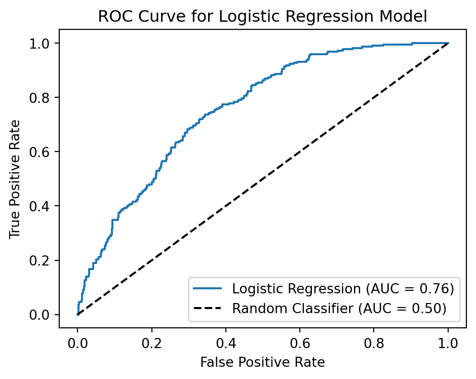

import pandas as pd
import numpy as np
import seaborn as sns
import matplotlib.pyplot as plt
from sklearn.model_selection import train_test_split
import statsmodels.api as sm
from sklearn import metrics
from sklearn.linear_model import LogisticRegression
from sklearn.metrics import confusion_matrix, accuracy_score, precision_score, recall_score🔍 Cruise Booking Cancellation Analysis
A Logistic Regression Approach to Predicting Cancellations for Lobster Land Cruises
1 Project Background
For Lobster Land Cruises, passenger cancellations are a costly and unpredictable issue. The company needed a reliable way to anticipate these cancellations before they happen. In this project, I developed a machine learning classification model to predict which customers are most likely to cancel their bookings. By analyzing historical passenger data and identifying high-risk profiles, this analysis aims to empower the marketing team with actionable, data-driven insights to proactively retain customers and optimize marketing resources.
2 Data Preparation & Exploration
First of all, I explored the dataset and prepared it for modeling. I addressed missing values in the loyalty_status variable by imputing them with “None,” as these entries represent customers without loyalty status. Next, based on the statistical summary of the dataset, I identified and handled impossible values in the customer_income variable. Given that the number of problematic rows was small, I decided to remove them to avoid introducing bias through imputation or substitution, thereby preserving the overall integrity of the dataset.
Additionally, by checking the values in the canceled variable, I found a certain degree of class imbalance among the records: about 72% of bookings were not canceled and 28% were canceled. This imbalance could negatively affect the model’s sensitivity to detecting cancellations and may impact precision and recall scores. I tried to address this issue by adjusting the class weights in subsequent modeling steps.
cruise_cancellations = pd.read_csv("Datasets/cruise_cancellations.csv")
cruise_cancellations.head()| age | booking_lead_time | trip_length | cabin_type | group_size | loyalty_status | paid_in_full | prior_cruises | customer_income | email_engagement_score | phone_verified | has_insurance | on_mailing_list | website_visits_last_month | survey_participation | preferred_contact_method | travel_history_score | referral_source | gift_certificate_used | canceled | |
|---|---|---|---|---|---|---|---|---|---|---|---|---|---|---|---|---|---|---|---|---|
| 0 | 56 | 131 | 7 | Oceanview | 5 | NaN | 1 | 1 | 134181.36 | 0.41 | 1 | 0 | 1 | 4 | No | Phone | 62.70 | Friend | 0 | 0 |
| 1 | 69 | 293 | 5 | Oceanview | 5 | NaN | 1 | 2 | 104770.24 | 0.34 | 1 | 0 | 1 | 1 | No | 56.59 | Friend | 0 | 0 | |
| 2 | 46 | 171 | 7 | Balcony | 3 | NaN | 0 | 1 | 109135.01 | 0.38 | 1 | 0 | 0 | 3 | Yes | Phone | 57.58 | Ad | 0 | 1 |
| 3 | 32 | 183 | 3 | Balcony | 2 | Silver | 0 | 0 | 80108.53 | 0.58 | 0 | 0 | 0 | 2 | No | 14.75 | Search Engine | 0 | 1 | |
| 4 | 60 | 364 | 10 | Oceanview | 3 | Silver | 0 | 2 | 73401.55 | 0.50 | 1 | 0 | 1 | 3 | Partial | Phone | 47.49 | Ad | 0 | 0 |
cruise_cancellations.info()<class 'pandas.core.frame.DataFrame'>
RangeIndex: 2000 entries, 0 to 1999
Data columns (total 20 columns):
# Column Non-Null Count Dtype
--- ------ -------------- -----
0 age 2000 non-null int64
1 booking_lead_time 2000 non-null int64
2 trip_length 2000 non-null int64
3 cabin_type 2000 non-null object
4 group_size 2000 non-null int64
5 loyalty_status 1016 non-null object
6 paid_in_full 2000 non-null int64
7 prior_cruises 2000 non-null int64
8 customer_income 2000 non-null float64
9 email_engagement_score 2000 non-null float64
10 phone_verified 2000 non-null int64
11 has_insurance 2000 non-null int64
12 on_mailing_list 2000 non-null int64
13 website_visits_last_month 2000 non-null int64
14 survey_participation 2000 non-null object
15 preferred_contact_method 2000 non-null object
16 travel_history_score 2000 non-null float64
17 referral_source 2000 non-null object
18 gift_certificate_used 2000 non-null int64
19 canceled 2000 non-null int64
dtypes: float64(3), int64(12), object(5)
memory usage: 312.6+ KBcruise_cancellations['canceled'].value_counts()canceled
0 1447
1 553
Name: count, dtype: int64cruise_cancellations['loyalty_status'] = cruise_cancellations['loyalty_status'].fillna('None')cruise_cancellations.describe()| age | booking_lead_time | trip_length | group_size | paid_in_full | prior_cruises | customer_income | email_engagement_score | phone_verified | has_insurance | on_mailing_list | website_visits_last_month | travel_history_score | gift_certificate_used | canceled | |
|---|---|---|---|---|---|---|---|---|---|---|---|---|---|---|---|
| count | 2000.000000 | 2000.000000 | 2000.000000 | 2000.00000 | 2000.000000 | 2000.000000 | 2000.000000 | 2000.000000 | 2000.000000 | 2000.000000 | 2000.000000 | 2000.000000 | 2000.000000 | 2000.000000 | 2000.000000 |
| mean | 49.114000 | 182.184000 | 7.237000 | 3.00500 | 0.714500 | 1.476500 | 84527.364645 | 0.503105 | 0.845500 | 0.398500 | 0.644500 | 2.989500 | 50.376555 | 0.092000 | 0.276500 |
| std | 17.926564 | 105.209014 | 3.151793 | 1.46835 | 0.451765 | 1.204647 | 29639.635285 | 0.144368 | 0.361518 | 0.489712 | 0.478784 | 1.700834 | 14.904381 | 0.289098 | 0.447379 |
| min | 18.000000 | 1.000000 | 3.000000 | 1.00000 | 0.000000 | 0.000000 | -7095.200000 | 0.010000 | 0.000000 | 0.000000 | 0.000000 | 0.000000 | 0.370000 | 0.000000 | 0.000000 |
| 25% | 34.000000 | 92.000000 | 5.000000 | 2.00000 | 0.000000 | 1.000000 | 64681.840000 | 0.400000 | 1.000000 | 0.000000 | 0.000000 | 2.000000 | 40.795000 | 0.000000 | 0.000000 |
| 50% | 49.000000 | 177.000000 | 7.000000 | 3.00000 | 1.000000 | 1.000000 | 84033.095000 | 0.500000 | 1.000000 | 0.000000 | 1.000000 | 3.000000 | 50.535000 | 0.000000 | 0.000000 |
| 75% | 65.000000 | 273.250000 | 10.000000 | 4.00000 | 1.000000 | 2.000000 | 104225.347500 | 0.600000 | 1.000000 | 1.000000 | 1.000000 | 4.000000 | 60.265000 | 0.000000 | 1.000000 |
| max | 79.000000 | 364.000000 | 14.000000 | 9.00000 | 1.000000 | 7.000000 | 184530.610000 | 0.930000 | 1.000000 | 1.000000 | 1.000000 | 10.000000 | 100.000000 | 1.000000 | 1.000000 |
neg_income = cruise_cancellations.loc[cruise_cancellations['customer_income'] < 0, 'customer_income'].count()
print(f"Records with negative spending: {neg_income}")Records with negative spending: 3cruise_cancellations = cruise_cancellations[(cruise_cancellations['customer_income'] >= 0)]3 Examining Correlations
As shown in the correlation matrix below, there are no strong correlations among the numeric independent variables. The highest absolute correlation is about 0.08, which is very low. There is no concern about multicollinearity, so I chose to keep all numeric variables for the logistic regression model.
numeric_vars = cruise_cancellations[[
'age',
'booking_lead_time',
'group_size',
'prior_cruises',
'customer_income',
'email_engagement_score',
'website_visits_last_month',
'travel_history_score'
]]
correlation_matrix = numeric_vars.corr()
correlation_matrix| age | booking_lead_time | group_size | prior_cruises | customer_income | email_engagement_score | website_visits_last_month | travel_history_score | |
|---|---|---|---|---|---|---|---|---|
| age | 1.000000 | 0.012926 | 0.028357 | -0.012924 | 0.043762 | -0.007838 | 0.010214 | 0.010904 |
| booking_lead_time | 0.012926 | 1.000000 | -0.035961 | 0.013892 | -0.017013 | -0.004563 | 0.004700 | -0.004476 |
| group_size | 0.028357 | -0.035961 | 1.000000 | -0.018318 | 0.030192 | 0.010110 | 0.000018 | -0.024376 |
| prior_cruises | -0.012924 | 0.013892 | -0.018318 | 1.000000 | 0.030205 | -0.018867 | 0.004294 | 0.078444 |
| customer_income | 0.043762 | -0.017013 | 0.030192 | 0.030205 | 1.000000 | -0.046670 | 0.036546 | -0.029320 |
| email_engagement_score | -0.007838 | -0.004563 | 0.010110 | -0.018867 | -0.046670 | 1.000000 | -0.016543 | 0.019920 |
| website_visits_last_month | 0.010214 | 0.004700 | 0.000018 | 0.004294 | 0.036546 | -0.016543 | 1.000000 | -0.006937 |
| travel_history_score | 0.010904 | -0.004476 | -0.024376 | 0.078444 | -0.029320 | 0.019920 | -0.006937 | 1.000000 |
4 Dummifying
In this step, I dummified the categorical variables that were not already binary-coded (1s and 0s). I set drop_first=True to avoid creating linear dependencies among the input features, ensuring that the model does not suffer from multicollinearity.
categorical_cols = ['cabin_type', 'trip_length', 'loyalty_status', 'survey_participation',
'preferred_contact_method', 'referral_source']
cruise_dummified = pd.get_dummies(cruise_cancellations, columns=categorical_cols, drop_first=True).astype(float)
cruise_dummified.head()| age | booking_lead_time | group_size | paid_in_full | prior_cruises | customer_income | email_engagement_score | phone_verified | has_insurance | on_mailing_list | ... | loyalty_status_None | loyalty_status_Platinum | loyalty_status_Silver | survey_participation_Partial | survey_participation_Yes | preferred_contact_method_Phone | preferred_contact_method_Text | referral_source_Friend | referral_source_Search Engine | referral_source_Social Media | |
|---|---|---|---|---|---|---|---|---|---|---|---|---|---|---|---|---|---|---|---|---|---|
| 0 | 56.0 | 131.0 | 5.0 | 1.0 | 1.0 | 134181.36 | 0.41 | 1.0 | 0.0 | 1.0 | ... | 1.0 | 0.0 | 0.0 | 0.0 | 0.0 | 1.0 | 0.0 | 1.0 | 0.0 | 0.0 |
| 1 | 69.0 | 293.0 | 5.0 | 1.0 | 2.0 | 104770.24 | 0.34 | 1.0 | 0.0 | 1.0 | ... | 1.0 | 0.0 | 0.0 | 0.0 | 0.0 | 0.0 | 0.0 | 1.0 | 0.0 | 0.0 |
| 2 | 46.0 | 171.0 | 3.0 | 0.0 | 1.0 | 109135.01 | 0.38 | 1.0 | 0.0 | 0.0 | ... | 1.0 | 0.0 | 0.0 | 0.0 | 1.0 | 1.0 | 0.0 | 0.0 | 0.0 | 0.0 |
| 3 | 32.0 | 183.0 | 2.0 | 0.0 | 0.0 | 80108.53 | 0.58 | 0.0 | 0.0 | 0.0 | ... | 0.0 | 0.0 | 1.0 | 0.0 | 0.0 | 0.0 | 0.0 | 0.0 | 1.0 | 0.0 |
| 4 | 60.0 | 364.0 | 3.0 | 0.0 | 2.0 | 73401.55 | 0.50 | 1.0 | 0.0 | 1.0 | ... | 0.0 | 0.0 | 1.0 | 1.0 | 0.0 | 1.0 | 0.0 | 0.0 | 0.0 | 0.0 |
5 rows × 31 columns
5 Data Partition
X_logistic = cruise_dummified.drop('canceled', axis=1)
y_logistic = cruise_dummified['canceled']
X_train, X_test, y_train, y_test = train_test_split(X_logistic, y_logistic, test_size=0.40,
random_state=654, stratify=y_logistic)6 Modeling
6.1 Initial Selection of Dependent Variables
In this step, I compared the mean values of the variables after grouping the data by the canceled outcome. Based on the observed differences, I made an early speculation that variables such as booking_lead_time, paid_in_full, customer_income, cabin_type, and loyalty_status may be particularly impactful predictors in our model.
group_means = cruise_dummified.groupby('canceled').mean().T
group_means| canceled | 0.0 | 1.0 |
|---|---|---|
| age | 49.090657 | 49.161232 |
| booking_lead_time | 187.815917 | 166.715580 |
| group_size | 3.000692 | 3.016304 |
| paid_in_full | 0.773702 | 0.559783 |
| prior_cruises | 1.487889 | 1.445652 |
| customer_income | 86411.206554 | 80080.975562 |
| email_engagement_score | 0.504588 | 0.498913 |
| phone_verified | 0.838062 | 0.864130 |
| has_insurance | 0.395848 | 0.407609 |
| on_mailing_list | 0.653979 | 0.621377 |
| website_visits_last_month | 2.991003 | 2.990942 |
| travel_history_score | 50.327246 | 50.517482 |
| gift_certificate_used | 0.083045 | 0.115942 |
| cabin_type_Interior | 0.301038 | 0.356884 |
| cabin_type_Oceanview | 0.294810 | 0.269928 |
| cabin_type_Suite | 0.096886 | 0.077899 |
| trip_length_5 | 0.232526 | 0.233696 |
| trip_length_7 | 0.311419 | 0.311594 |
| trip_length_10 | 0.217301 | 0.181159 |
| trip_length_14 | 0.096886 | 0.099638 |
| loyalty_status_None | 0.404152 | 0.724638 |
| loyalty_status_Platinum | 0.114187 | 0.041667 |
| loyalty_status_Silver | 0.304498 | 0.157609 |
| survey_participation_Partial | 0.215225 | 0.197464 |
| survey_participation_Yes | 0.292734 | 0.309783 |
| preferred_contact_method_Phone | 0.340484 | 0.342391 |
| preferred_contact_method_Text | 0.336332 | 0.322464 |
| referral_source_Friend | 0.231834 | 0.269928 |
| referral_source_Search Engine | 0.262976 | 0.221014 |
| referral_source_Social Media | 0.253979 | 0.268116 |
6.2 First iteration of the model (statsmodels)
I built the first iteration of the logistic regression model using the training data, initially including all available independent variables. Based on the model summary, the overall classification power was statistically significant, as indicated by a likelihood ratio (LLR) p-value much lower than 0.05. Some features have p-values much higher than 0.05, suggesting they are not strong predictors of booking cancellations.
X_train_sm1 = sm.add_constant(X_train)
logit_model = sm.Logit(y_train, X_train_sm1)
result_sm1 = logit_model.fit()
print(result_sm1.summary())Optimization terminated successfully.
Current function value: 0.509392
Iterations 6
Logit Regression Results
==============================================================================
Dep. Variable: canceled No. Observations: 1198
Model: Logit Df Residuals: 1167
Method: MLE Df Model: 30
Date: Tue, 31 Mar 2026 Pseudo R-squ.: 0.1358
Time: 02:35:35 Log-Likelihood: -610.25
converged: True LL-Null: -706.12
Covariance Type: nonrobust LLR p-value: 1.715e-25
==================================================================================================
coef std err z P>|z| [0.025 0.975]
--------------------------------------------------------------------------------------------------
const -0.0195 0.662 -0.029 0.977 -1.316 1.277
age -0.0006 0.004 -0.148 0.882 -0.009 0.007
booking_lead_time -0.0026 0.001 -3.711 0.000 -0.004 -0.001
group_size 0.0061 0.047 0.129 0.898 -0.087 0.099
paid_in_full -1.1592 0.152 -7.615 0.000 -1.458 -0.861
prior_cruises -0.0220 0.061 -0.364 0.716 -0.141 0.097
customer_income -9.252e-06 2.46e-06 -3.760 0.000 -1.41e-05 -4.43e-06
email_engagement_score 0.0534 0.506 0.106 0.916 -0.938 1.044
phone_verified 0.0732 0.199 0.368 0.713 -0.317 0.463
has_insurance 0.1305 0.145 0.900 0.368 -0.154 0.415
on_mailing_list -0.0906 0.148 -0.611 0.541 -0.381 0.200
website_visits_last_month 0.0449 0.042 1.057 0.290 -0.038 0.128
travel_history_score 0.0011 0.005 0.222 0.825 -0.008 0.011
gift_certificate_used 0.3687 0.229 1.613 0.107 -0.079 0.817
cabin_type_Interior 0.4552 0.180 2.523 0.012 0.102 0.809
cabin_type_Oceanview -0.0085 0.187 -0.045 0.964 -0.375 0.358
cabin_type_Suite -0.1946 0.278 -0.701 0.484 -0.739 0.350
trip_length_5 -0.0809 0.230 -0.353 0.724 -0.531 0.369
trip_length_7 -0.1458 0.217 -0.671 0.502 -0.572 0.280
trip_length_10 -0.2732 0.241 -1.134 0.257 -0.745 0.199
trip_length_14 -0.2432 0.294 -0.827 0.408 -0.819 0.333
loyalty_status_None 1.5505 0.242 6.395 0.000 1.075 2.026
loyalty_status_Platinum -0.1285 0.371 -0.346 0.729 -0.856 0.599
loyalty_status_Silver 0.3152 0.270 1.167 0.243 -0.214 0.844
survey_participation_Partial 0.0759 0.187 0.407 0.684 -0.290 0.442
survey_participation_Yes 0.1614 0.167 0.965 0.334 -0.166 0.489
preferred_contact_method_Phone -0.0226 0.172 -0.131 0.896 -0.360 0.315
preferred_contact_method_Text -0.3035 0.176 -1.724 0.085 -0.648 0.041
referral_source_Friend -0.0205 0.203 -0.101 0.919 -0.418 0.377
referral_source_Search Engine -0.2268 0.203 -1.118 0.263 -0.624 0.171
referral_source_Social Media -0.1102 0.197 -0.560 0.576 -0.496 0.276
==================================================================================================Consequently, I would remove the numerical variables with high p-values (age, prior_cruises, email_engagement_score, website_visits_last_month and travel_history_score), as well as categorical variables where all levels showed high p-values (group_size, phone_verified, has_insurance, on_mailing_list, gift_certificate_used, trip_length, survey_participation, preferred_contact_method and referral_source).
6.3 Another Model Iteration (statsmodels)
Then, I performed another model iteration. In this iteration, I used only the independent variables that remained after the first model refinement. As shown in the updated model summary, the LLR p-value has declined from 1.715e-25 to 9.926e-34. This indicates that by limiting our inputs to only the features that significantly impact booking cancellations, I have developed a better-fitting and more compact model.
The summary below tells us that:
For each additional day that a customer books in advance (
booking_lead_time), the log odds of a cruise booking being canceled decrease by 0.0025, holding all other variables constant.Having paid the full amount for the cruise (
paid_in_full) decreases the log odds of cancellation by 1.1325 compared to customers who have not paid in full, holding all other variables constant.For every additional dollar in customer income (customer_income), the log odds of cancellation decrease by 8.916e-06, holding all other variables constant.
Compared to customers who booked a
Balcony cabin, customers booking anInterior cabin(cabin_type_Interior) experience an increase of 0.4338 in the log odds of cancellation, holding all other variables constant.Compared to customers with
Goldloyalty status, customerswithout any loyalty status(loyalty_status_None) experience an increase of 1.5381 in the log odds of cancellation, holding all other variables constant.
X_train_sm2 = X_train[['booking_lead_time', 'paid_in_full', 'customer_income',
'cabin_type_Interior', 'cabin_type_Oceanview', 'cabin_type_Suite',
'loyalty_status_None', 'loyalty_status_Platinum', 'loyalty_status_Silver']]
X_train_sm2 = sm.add_constant(X_train_sm2)
logit_model_sm2 = sm.Logit(y_train, X_train_sm2)
result_sm2 = logit_model_sm2.fit()
print(result_sm2.summary())Optimization terminated successfully.
Current function value: 0.514877
Iterations 6
Logit Regression Results
==============================================================================
Dep. Variable: canceled No. Observations: 1198
Model: Logit Df Residuals: 1188
Method: MLE Df Model: 9
Date: Tue, 31 Mar 2026 Pseudo R-squ.: 0.1265
Time: 02:35:36 Log-Likelihood: -616.82
converged: True LL-Null: -706.12
Covariance Type: nonrobust LLR p-value: 9.926e-34
===========================================================================================
coef std err z P>|z| [0.025 0.975]
-------------------------------------------------------------------------------------------
const -0.0693 0.350 -0.198 0.843 -0.755 0.616
booking_lead_time -0.0025 0.001 -3.624 0.000 -0.004 -0.001
paid_in_full -1.1325 0.149 -7.585 0.000 -1.425 -0.840
customer_income -8.916e-06 2.41e-06 -3.696 0.000 -1.36e-05 -4.19e-06
cabin_type_Interior 0.4338 0.178 2.436 0.015 0.085 0.783
cabin_type_Oceanview -0.0275 0.185 -0.149 0.882 -0.389 0.334
cabin_type_Suite -0.2020 0.275 -0.735 0.462 -0.740 0.336
loyalty_status_None 1.5381 0.240 6.412 0.000 1.068 2.008
loyalty_status_Platinum -0.0968 0.367 -0.264 0.792 -0.815 0.622
loyalty_status_Silver 0.2951 0.267 1.104 0.270 -0.229 0.819
===========================================================================================6.4 Model Evaluation
Next, I built another version of our model using scikit-learn to evaluate its performance.
X_train_sk = X_train[['booking_lead_time', 'paid_in_full', 'customer_income',
'cabin_type_Interior', 'cabin_type_Oceanview', 'cabin_type_Suite',
'loyalty_status_None', 'loyalty_status_Platinum', 'loyalty_status_Silver']]
X_test_sk = X_test[['booking_lead_time', 'paid_in_full', 'customer_income',
'cabin_type_Interior', 'cabin_type_Oceanview', 'cabin_type_Suite',
'loyalty_status_None', 'loyalty_status_Platinum', 'loyalty_status_Silver']]log_reg = LogisticRegression(max_iter=10000)
log_reg.fit(X_train_sk, y_train)LogisticRegression(max_iter=10000)In a Jupyter environment, please rerun this cell to show the HTML representation or trust the notebook.
On GitHub, the HTML representation is unable to render, please try loading this page with nbviewer.org.
Parameters
| penalty | 'l2' | |
| dual | False | |
| tol | 0.0001 | |
| C | 1.0 | |
| fit_intercept | True | |
| intercept_scaling | 1 | |
| class_weight | None | |
| random_state | None | |
| solver | 'lbfgs' | |
| max_iter | 10000 | |
| multi_class | 'deprecated' | |
| verbose | 0 | |
| warm_start | False | |
| n_jobs | None | |
| l1_ratio | None |
y_pred_logistic = log_reg.predict(X_test_sk)
cm_logistic = confusion_matrix(y_test, y_pred_logistic)plt.figure(figsize=(5, 4))
sns.heatmap(cm_logistic, annot=True, fmt='d', cmap='Blues',
xticklabels=['Not Canceled (0)', 'Canceled (1)'],
yticklabels=['Not Canceled (0)', 'Canceled (1)'])
plt.title("Confusion Matrix of Logistic Regression Model", fontsize=12, pad=10)
plt.xlabel("Predicted", fontsize=12, labelpad=10)
plt.ylabel("Actual", fontsize=12, labelpad=10)
plt.tight_layout()
plt.show()
accuracy = accuracy_score(y_test, y_pred_logistic)
sensitivity = recall_score(y_test, y_pred_logistic)
tn, fp, fn, tp = cm_logistic.ravel()
specificity = tn / (tn + fp) if (tn + fp) != 0 else 0
precision = precision_score(y_test, y_pred_logistic)
balanced_accuracy = (sensitivity + specificity) / 2
print(f"The model's accuracy rate is {accuracy:.2%}.")
print(f"The model's sensitivity rate is {sensitivity:.2%}")
print(f"The model's specificity rate is {specificity:.2%}")
print(f"The model's precision is {precision:.2%}")
print(f"The model's balanced accuracy is {balanced_accuracy:.2%}")The model's accuracy rate is 74.09%.
The model's sensitivity rate is 26.24%
The model's specificity rate is 92.39%
The model's precision is 56.86%
The model's balanced accuracy is 59.32%train_accuracy = log_reg.score(X_train_sk, y_train)
test_accuracy = log_reg.score(X_test_sk, y_test)
print(f"Training Accuracy: {train_accuracy:.4f}")
print(f"Test Accuracy: {test_accuracy:.4f}")Training Accuracy: 0.7304
Test Accuracy: 0.7409These results imply that while the model is conservative and favors predicting non-cancellations (leading to high specificity), it misses a substantial portion of actual cancellations (low sensitivity). In business terms, this could mean Lobster Land risks underestimating the number of cancellations, which might impact operational planning and revenue forecasting.
Furthermore, I compared the accuracy on the training and test sets. The training set accuracy is 73.12%, while the test set accuracy is 74.22%. Since the two accuracy rates are very close, it suggests that this model has not been overfitted to the training data.
6.5 Address the Imbalance Issue
To address the class imbalance issue, I applied the class_weight parameter in the logistic regression model. This parameter allows us to assign different weights to the classes, which can help improve the model’s sensitivity to the minority class (cancellations). By setting class_weight='balanced', I let scikit-learn automatically adjust the weights inversely proportional to class frequencies in the input data.
log_reg_bl = LogisticRegression(max_iter=1000, class_weight='balanced')
log_reg_bl.fit(X_train_sk, y_train)LogisticRegression(class_weight='balanced', max_iter=1000)In a Jupyter environment, please rerun this cell to show the HTML representation or trust the notebook.
On GitHub, the HTML representation is unable to render, please try loading this page with nbviewer.org.
Parameters
| penalty | 'l2' | |
| dual | False | |
| tol | 0.0001 | |
| C | 1.0 | |
| fit_intercept | True | |
| intercept_scaling | 1 | |
| class_weight | 'balanced' | |
| random_state | None | |
| solver | 'lbfgs' | |
| max_iter | 1000 | |
| multi_class | 'deprecated' | |
| verbose | 0 | |
| warm_start | False | |
| n_jobs | None | |
| l1_ratio | None |
y_pred_bl = log_reg_bl.predict(X_test_sk)
cm_logistic_bl = confusion_matrix(y_test, y_pred_bl)plt.figure(figsize=(5, 4))
sns.heatmap(cm_logistic_bl, annot=True, fmt='d', cmap='Blues',
xticklabels=['Not Canceled (0)', 'Canceled (1)'],
yticklabels=['Not Canceled (0)', 'Canceled (1)'])
plt.title("Confusion Matrix of Logistic Regression Model", fontsize=12, pad=10)
plt.xlabel("Predicted", fontsize=12, labelpad=10)
plt.ylabel("Actual", fontsize=12, labelpad=10)
plt.tight_layout()
plt.show()
accuracy_bl = accuracy_score(y_test, y_pred_bl)
sensitivity_bl = recall_score(y_test, y_pred_bl)
tn, fp, fn, tp = cm_logistic_bl.ravel()
specificity_bl = tn / (tn + fp) if (tn + fp) != 0 else 0
precision_bl = precision_score(y_test, y_pred_bl)
balanced_accuracy_bl = (sensitivity + specificity) / 2
print(f"The model's accuracy rate is {accuracy_bl:.2%}.")
print(f"The model's sensitivity rate is {sensitivity_bl:.2%}")
print(f"The model's specificity rate is {specificity_bl:.2%}")
print(f"The model's precision is {precision_bl:.2%}")
print(f"The model's balanced accuracy is {balanced_accuracy_bl:.2%}")The model's accuracy rate is 66.96%.
The model's sensitivity rate is 74.66%
The model's specificity rate is 64.01%
The model's precision is 44.24%
The model's balanced accuracy is 59.32%train_accuracy_bl = log_reg_bl.score(X_train_sk, y_train)
test_accuracy_bl = log_reg_bl.score(X_test_sk, y_test)
print(f"Training Accuracy: {train_accuracy_bl:.4f}")
print(f"Test Accuracy: {test_accuracy_bl:.4f}")Training Accuracy: 0.6728
Test Accuracy: 0.6696These results highlight a substantial improvement in sensitivity, meaning the model is now much more effective at identifying customers who are likely to cancel. Although overall accuracy and specificity decreased slightly, this trade-off aligns with Lobster Land management’s objective of prioritizing the detection of potential cancellations.
Moreover, the similar accuracy rates on the training and test sets indicate that the model effectively captures the underlying patterns in the dataset without signs of overfitting. This balance suggests that the model generalizes well to unseen data while maintaining its predictive reliability. This balance between improved sensitivity and maintained generalizability enhances the model’s practical value in supporting proactive retention strategies.
y_pred_proba = log_reg.predict_proba(X_test_sk)[:, 1]
fpr, tpr, thresholds = metrics.roc_curve(y_test, y_pred_proba)
auc = metrics.roc_auc_score(y_test, y_pred_proba)
plt.figure(figsize=(5, 4))
plt.plot(fpr, tpr, label='Logistic Regression (AUC = {:.2f})'.format(auc))
plt.plot([0, 1], [0, 1], 'k--', label='Random Classifier (AUC = 0.50)')
plt.xlabel('False Positive Rate')
plt.ylabel('True Positive Rate')
plt.title('ROC Curve for Logistic Regression Model')
plt.legend(loc='lower right')
plt.tight_layout()
plt.show()
To validate the model’s predictive power before applying it to business decisions, I also visualized its performance using an ROC curve.
This ROC curve visually demonstrates our logistic regression model’s ability to distinguish between “potential cancelers” and “safe customers.” The black dashed line represents a random, “coin-toss” baseline (AUC = 0.50). In contrast, our model’s solid line bows significantly toward the top-left corner, achieving an Area Under the Curve (AUC) score of 0.76. In practical terms, this means that if we randomly select one passenger who actually canceled and one who did not, our model has a 76% chance of correctly telling them apart.
This AUC of 0.76 represents an actionable model. Instead of relying on expensive, inefficient “catch-all” marketing campaigns for every passenger, the marketing team can now proactively identify high-risk customers. By strategically allocating limited retention resources specifically to this at-risk group, Lobster Land can effectively reduce cancellation rates while maximizing its Return on Investment (ROI).
7 Model Interpretation & Marketing Insights
coefficients_bl = log_reg_bl.coef_.flatten()
coefficients_df = pd.DataFrame({
'Feature': X_train_sk.columns,
'Coefficient': coefficients_bl
})
coefficients_df| Feature | Coefficient | |
|---|---|---|
| 0 | booking_lead_time | -0.002559 |
| 1 | paid_in_full | -1.163418 |
| 2 | customer_income | -0.000009 |
| 3 | cabin_type_Interior | 0.447242 |
| 4 | cabin_type_Oceanview | -0.058235 |
| 5 | cabin_type_Suite | -0.163530 |
| 6 | loyalty_status_None | 1.528304 |
| 7 | loyalty_status_Platinum | -0.133701 |
| 8 | loyalty_status_Silver | 0.234588 |
7.1 Interpretation
The coefficients of the input features provide the following insights about the final model’s results:
For each additional day a customer books in advance, the likelihood of a cruise booking being canceled decreases, holding all other variables constant. This suggests that passengers who plan their trips early are generally more committed and less likely to change their minds.
Customers who have paid the full amount for the cruise are less likely to cancel their booking compared to those who made partial payments, holding all else constant. This indicates that passengers who have made a financial commitment to the cruise are more likely to follow through with their bookings.
Every additional dollar in customer income is associated with a relative decrease in the probability of cancellation, holding all other factors constant. This might reflect that wealthier passengers are less price-sensitive and more likely to commit to their bookings.
Compared to customers who booked a Balcony cabin, those booking an Interior cabin are more likely to cancel, while those booking an Oceanview cabin are less likely to cancel. This could be due to different expectations and experiences associated with different cabin types.
Compared to customers with Gold loyalty status, customers without any loyalty status and those with Silver loyalty status are more likely to cancel. However, customers with Platinum loyalty status are less likely to cancel, holding all other factors constant. This suggests that loyalty programs play a significant role in retention.
In general, passengers who book late, make partial payments, have lower loyalty status, book interior cabins, or have lower income levels appear most at risk of cancellation.
7.2 Suggestions
Based on these insights, Lobster Land marketing teams can develop targeted strategies to increase customer commitment and reduce cancellations, such as:
Proactive Outreach: Marketing teams can reach out to passengers with partial payments, particularly those with lower incomes, as they are more likely to cancel. Personalized emails, offering reassurance, payment plans, or flexible cancellation policies, could encourage them to finalize their bookings. These communications could emphasize the benefits of early commitment and offer targeted discounts for early full payments.
Targeted Promotions: Given the impact of cabin type, Lobster Land could target passengers booking Interior cabins with additional perks such as room upgrades or discounts on shore excursions to reduce the likelihood of cancellations. For Oceanview and Balcony cabin customers, Lobster Land can continue promoting their offerings, emphasizing the unique experiences that these cabins provide.
Loyalty Program Strengthening: With loyalty status strongly influencing cancellation behavior, Lobster Land can focus on nurturing their existing loyal customers. Offering targeted incentives for Silver members to upgrade to Gold or Platinum status can help retain high-value passengers. Furthermore, for non-loyalty customers, marketing efforts could center around showcasing the benefits of the loyalty program and encouraging them to join early in their booking process.
Customer Segmentation: The insights on customer income and payment behavior suggest that Lobster Land may benefit from creating distinct marketing campaigns tailored to different income segments. For higher-income passengers, premium services or exclusive offers can be emphasized, while for lower-income passengers, flexible payment options and affordability could be prioritized to reduce cancellations.
7.3 Concentrating Marketing Efforts
While this standard classification model provides a binary prediction of whether a passenger will cancel, Lobster Land can unlock more business value by utilizing the model’s predictive probabilities (predict_proba()). Rather than treating all potential cancellations as a homogenous group, management can use these probability scores to implement highly nuanced, cost-effective retention strategies.
probs_df = pd.DataFrame(log_reg_bl.predict_proba(X_test_sk))
probs_df_sorted = probs_df.sort_values(1, ascending = False)
probs_df_sorted.head(10)| 0 | 1 | |
|---|---|---|
| 175 | 0.073302 | 0.926698 |
| 212 | 0.078787 | 0.921213 |
| 116 | 0.093603 | 0.906397 |
| 710 | 0.095091 | 0.904909 |
| 55 | 0.110274 | 0.889726 |
| 515 | 0.119001 | 0.880999 |
| 385 | 0.127803 | 0.872197 |
| 416 | 0.131670 | 0.868330 |
| 519 | 0.135430 | 0.864570 |
| 692 | 0.135849 | 0.864151 |
For instance, Lobster Land could concentrate its targeted outreach by focusing on prospective cruisers whose predict_proba() values are exceptionally high, such as above 0.80. If the marketing team has a limited budget for expensive interventions, reserving these resources strictly for passengers who are on the verge of canceling ensures a higher return on investment.
probs_df_middle = probs_df[(probs_df[1] > 0.3) & (probs_df[1] < 0.7)].sort_values(1, ascending = False)
probs_df_middle.sample(10)| 0 | 1 | |
|---|---|---|
| 431 | 0.396015 | 0.603985 |
| 108 | 0.377564 | 0.622436 |
| 527 | 0.433807 | 0.566193 |
| 787 | 0.421955 | 0.578045 |
| 545 | 0.664074 | 0.335926 |
| 465 | 0.419095 | 0.580905 |
| 785 | 0.338940 | 0.661060 |
| 676 | 0.685144 | 0.314856 |
| 476 | 0.465141 | 0.534859 |
| 702 | 0.539473 | 0.460527 |
Alternatively, management could adopt a “triage” approach to marketing. They might determine that customers with a cancellation probability exceeding 70% are essentially “lost causes” who have likely already finalized their decision to back out. Conversely, passengers with a cancellation probability below 30% can be considered relatively “safe.” By filtering out these two groups, Lobster Land can focus its marketing resources on the middle cohort (the 30% to 70% range). This group represents the “fence-sitters”, who are hesitant to commit, but can be retained with appropriate strategic measures, such as sending a reassuring email about the ship’s safety regulations or offering a limited-time upgrade offer.
In this way, business can move beyond simply asking, “Will they cancel?” to strategically answering, “Who is worth our marketing effort to save, and what is the most efficient way to allocate that budget?”